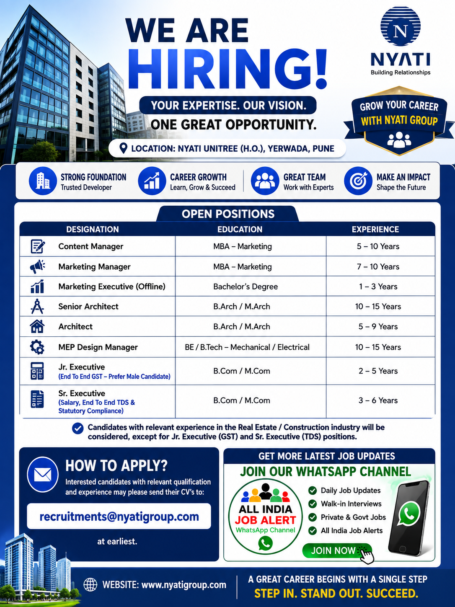

Nyati Group has announced multiple career opportunities for experienced and qualified professionals in its real estate and construction-related operations. Candidates looking for jobs in Pune and surrounding areas can check the latest vacancies mentioned in the recruitment notification. The current openings cover several departments including marketing, architecture, MEP design, taxation, GST, TDS, statutory compliance and other professional functions.

Company: Nyati Group
Location: Nyati Unitree (H.O.), Yerwada, Pune
Industry: Real Estate / Construction
Recruitment Type: Private Job / Direct Recruitment
Job Status: Multiple Positions
Experience: 1–15 Years depending on the position
Application Mode: Email
Official Application Email: recruitments@nyatigroup.com
Nyati Group is inviting applications from suitable candidates for multiple positions across different functional areas. The recruitment drive is particularly relevant for professionals who have experience in real estate, construction, architecture, marketing, MEP design, finance, GST, taxation, customer-facing operations and related fields.
The vacancies provide opportunities for candidates at different stages of their professional careers. Some positions require several years of industry experience, while certain executive-level roles are suitable for candidates with comparatively lower experience. Candidates should carefully review the requirements for the position they are interested in before submitting their CV.
According to the recruitment poster, the job location is associated with Nyati Unitree, Yerwada, Pune. Candidates who are comfortable working in Pune and have the required educational qualifications and professional experience may consider applying for the relevant position.
Education: MBA – Marketing
Experience: 5–10 Years
The Content Manager position is suitable for professionals with experience in content planning, communication, marketing-related content and coordination. Candidates with strong writing, planning and content management skills may be considered for this role.
Education: MBA – Marketing
Experience: 7–10 Years
This position is intended for experienced marketing professionals. Candidates should have relevant marketing knowledge and professional experience. Experience in the real estate or construction industry can be useful for understanding the business environment and customer requirements.
Education: Bachelor's Degree
Experience: 1–3 Years
The Marketing Executive role is suitable for candidates who have experience in offline marketing activities, customer interaction, coordination and promotional work. Candidates should have good communication and interpersonal skills.
Education: B.Arch / M.Arch
Experience: 10–15 Years
Experienced architecture professionals with a strong background in architectural design and project coordination may apply for this position. Candidates should have the required professional qualification and relevant industry experience.
Education: B.Arch / M.Arch
Experience: 5–9 Years
The Architect position is intended for qualified professionals with relevant architectural experience. Candidates should be capable of working on architectural requirements and coordinating with project teams.
Education: BE / B.Tech – Mechanical / Electrical
Experience: 10–15 Years
This role is suitable for experienced Mechanical or Electrical engineering professionals who have relevant MEP design and project-related experience. Candidates with experience coordinating design requirements and project teams may be suitable.
Education: B.Com / M.Com
Experience: 2–5 Years
Candidates with experience in GST-related activities, documentation, accounting support and taxation processes may apply for this position. The recruitment poster indicates preference for male candidates for this role.
Education: B.Com / M.Com
Experience: 3–6 Years
This role is suitable for professionals with experience in salary processing, TDS activities, statutory compliance and related financial operations. Candidates should have relevant educational qualifications and practical experience.
Candidates should carefully check the educational qualification and experience requirements before applying. The recruitment includes positions ranging from executive-level opportunities to senior management and specialist positions. Therefore, the required experience varies according to the designation.
Candidates applying for marketing positions should preferably have relevant marketing qualifications and practical experience. Architecture positions require B.Arch or M.Arch qualifications as specified in the recruitment information. The MEP Design Manager position requires an engineering qualification in Mechanical or Electrical engineering.
For GST and TDS-related positions, candidates with B.Com or M.Com qualifications and relevant taxation, accounting or statutory compliance experience can apply. Candidates should ensure that the information provided in their CV is accurate and up to date.
The experience requirement varies significantly from one position to another. The recruitment notification mentions experience ranging from approximately 1 year for certain executive opportunities to 15 years for senior professional positions.
Candidates with experience in the real estate or construction industry are particularly relevant for the advertised opportunities. However, the recruitment poster also identifies certain positions where candidates from the specified professional background may be considered.
Applicants should avoid applying for positions where they do not meet the basic experience or qualification criteria. Selecting the correct position according to professional background can help candidates present a stronger application.
The recruitment information mentions Nyati Unitree, Yerwada, Pune as the location associated with the vacancies. Candidates who are currently living in Pune or are willing to relocate to Pune may consider these opportunities.
Before joining, candidates should independently verify the exact work location, job responsibilities, salary, benefits, working hours and other employment conditions with the recruiting organization.
Interested candidates with relevant qualifications and professional experience may send their updated CV or resume to the email address mentioned in the recruitment poster.
Email: recruitments@nyatigroup.com
Candidates should mention the position/designation they are applying for in the email subject line. The resume should contain accurate information about educational qualifications, total professional experience, current location, relevant skills and previous employment.
Applicants should preferably attach their latest updated CV in PDF format. A clear and professional CV can make it easier for the recruitment team to review the candidate's profile.
The advertised vacancies cover several professional departments, making this recruitment relevant to candidates from different educational and career backgrounds. Professionals working in marketing, architecture, engineering, finance, taxation and compliance may find a position matching their experience.
Candidates interested in the real estate and construction sector can also use these openings to explore career opportunities in a professional project environment. Experienced professionals may consider the senior-level roles, while candidates with comparatively lower experience can check the executive-level positions.
Applicants should understand that selection is based on the employer's requirements and recruitment process. Submission of a CV does not guarantee selection or employment. Candidates should verify all employment terms directly with the company before accepting any offer.
This job post is published for informational and career-opportunity purposes. Candidates should verify the vacancy, interview details, salary, benefits, employment conditions and other information directly with the recruiting organization before proceeding.
Never pay money to any person for a job application, interview, selection, offer letter or joining process unless the employer has clearly verified and officially confirmed the requirement. Be careful with unknown calls, messages and payment requests.
Get more job updates, recruitment notifications and vacancy information through our WhatsApp channel.
📲 JOIN OUR WHATSAPP JOB ALERT CHANNELThe recruitment poster is for Nyati Group and lists multiple professional positions connected with its operations.
The poster mentions Nyati Unitree, Yerwada, Pune as the location.
Eligible candidates can send their updated CV to recruitments@nyatigroup.com.
The required qualification depends on the position. The recruitment includes MBA Marketing, Bachelor's Degree, B.Arch/M.Arch, BE/B.Tech Mechanical/Electrical and B.Com/M.Com qualifications.
Experience requirements vary by position and range from approximately 1 year to 15 years according to the recruitment poster.
Most listed positions require relevant experience. Candidates should check the specific designation and minimum experience before applying.
Nyati Group Recruitment 2026 provides multiple opportunities for professionals interested in marketing, architecture, engineering, MEP design, GST, TDS, statutory compliance and other business functions. Candidates with relevant educational qualifications and professional experience can review the available positions and apply for the role that best matches their profile.
Before applying, candidates should carefully read the job requirements, prepare an updated CV and send the application to the recruitment email address provided in the notification. Candidates should also verify the latest vacancy status directly with the recruiting organization because vacancies and recruitment schedules can change.
For more private-sector job alerts and recruitment updates, candidates can join our WhatsApp channel and regularly check new vacancy posts published on our website.